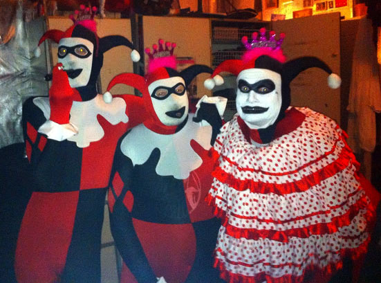

Dennis Agerblad Band rallede i 3 timer til Keramik udstillingen Her Alter Ego Universe af Christin Johansson. Dennis Agerblad Band bestod denne dag af: Hairwerk Hugh Mongous, Knud Vesterskov og Dennis Agerblad.
